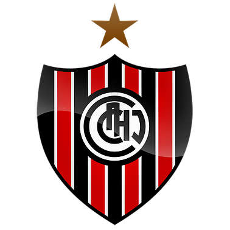

CLUB ATLÉTICO CHACARITA JUNIORS
Fundado el 1º de Mayo de 1906.
Secretaría: Teodoro García 3550 - (C1427ECB) C.A.B.A. - Tel. y Fax.: 4553-0304, 4555-0445 /1481
Estadio: Gutiérrez 351 (1650) - Villa Maipú - Partido de San Martín (Bs.As.)
Polideportivo: Bahía Blanca 2681, San Martín (Bs.As.)
Email: secretaria@chacaritajuniors.org.ar Internet: www.chacaritajuniors.org.ar
Presidente: Néstor José Di Pierro